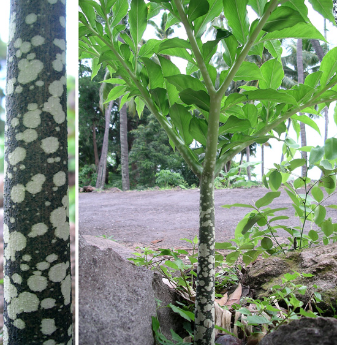

Indonesia Trav-E-Logs ©
Wairiang, Lembata Island, Solor Archipelago
| back: Lewoleba | View from Lembata Island includes Pantar Island in the Alor Archipelago |
================================= The village of Wairiang is the eastern-most port of the Solor Archipelago. It is not set up for tourists, as the port is used primarily in the rainy season to shorten the boat trip from Lembata to Kalabahi in the Alor Archipelago. =================================
January, 2007
|
The bus to Balauring was sitting in the station, but did not appear to be ready to go anywhere. Located the driver, who indicated it would be more than an hour wait. Inviting me to safely leave my backpack on the bus freed me to wander up and down the highway. Trusting strangers with your backpack may not always be a good idea in big cities or high tourist areas, but this is a village, and I haven't seen a westerner in six days. The bus trip was uneventful -- but that does not mean boring. Quite the contrary, as with each bend in the road new sights are seen. And one never tires of staring at Ile Ape with its ever-changing volcanic plume of smoke. Upon arrival in Balauring, the person in a "Polis" box near the port immediately says "No boat here", only from Wairiang. So we yelled down the road to the bus that had just dropped me off. Lucky for me he heard us, backed up, and the same seat was home for another hour. Wairiang is a central village and port among many small villages along the eastern coast of Lembata. Calling it a "port" begs an explanation. There is no pier, no dock, nothing to indicate where passengers should congregate to arrange sea travel. Fishing boats are scattered around the bay, and it turns out the local mosque is the closest landmark to the piles of trash one crosses to wade into the water to board a boat for transport. After getting off the bus for the second time, I'm looking for the port, a room for the night, and a place to eat. No one speaks English, but most do speak Indonesian. My little dictionary comes in handy. For "port", people point to the piles of trash on the beach. Tomorrow -- boat -- to Kalabahi. Great. Sleep? They take me to a pool hall/losmen without sign -- two rooms, but four pool tables. Once my pack is down, it's time to think about breakfast, lunch, and dinner, as I've had nothing to eat all day. Leaving all my possessions in a room with no lock on the outside is a little unsettling, but necessary.Finding the only Rumah Makkan in town was not a thrill, as he only occasionally serves food. Reluctantly, he served me a cold dish of rice and vegetable -- the only dish he had. Asking what time he opened for breakfast, he said, "No -- losmen". That was a pleasant discovery -- A simple request back at the losmen would generate a home-cooked meal. The following morning brought no boat to the designated piles of trash. Every morning was again told "Tomorrow". Finally decided to wait only one more day. Backtracking to Larantuka may take three days, and that would be my last chance to be out of country before my Visa expires. Besides, the weather has been mostly clear with little wind -- ideal for the somewhat risky boat trip to Kalabahi during the rainy season. One afternoon, a gentleman insisted I follow him -- to the Polis Pos. The gentleman in the Polis Pos was also not in uniform, but demanded to see my passport. After 10 minutes of watching them go through every page, it seemed appropriate to ask who they were. Though one was a government official, the other was just a friend. After my explanation that it was rude to show my personal information to others, the official apologized, the friend left, and my passport was returned.  |
Each day a walk was taken down a road or path to see more of the beautiful countryside. Here are some of the photos, from upper right: Unsigned losmen (guesthouse); This flowering plant is growing wild by a stream in the center of the village. The locals laughed when I took the picture; Was happy to come across a cashew tree, as the locals sell the nuts to exporters, keeping only the fruit for local consumption. Once you see that the nut is external to the fruit, it is easier to understand how this is possible; Traditional structure; Tiny flowering plant by side of road; Police station; Muslim grave markers; This type of fern often gets a fungus growing on the stalk making it strikingly beautiful. |
------------------------------
Email me at: "juno.com" preceded by an "@" and "dancer2SEAsia"
"The backpacker discovers people are beautiful everywhere. It's the Governments that are evil."
| next: Natal & Idul Adha |
| back: Lewoleba |